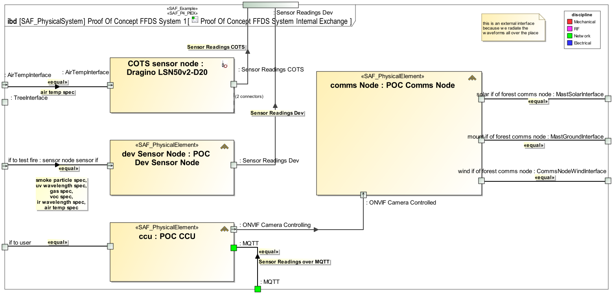
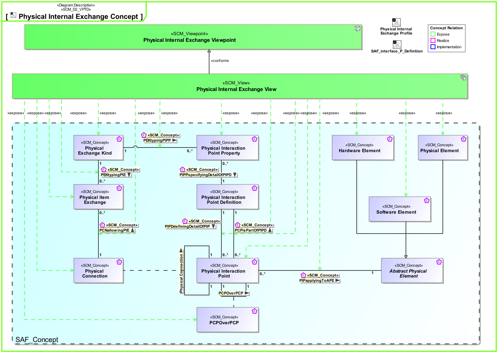
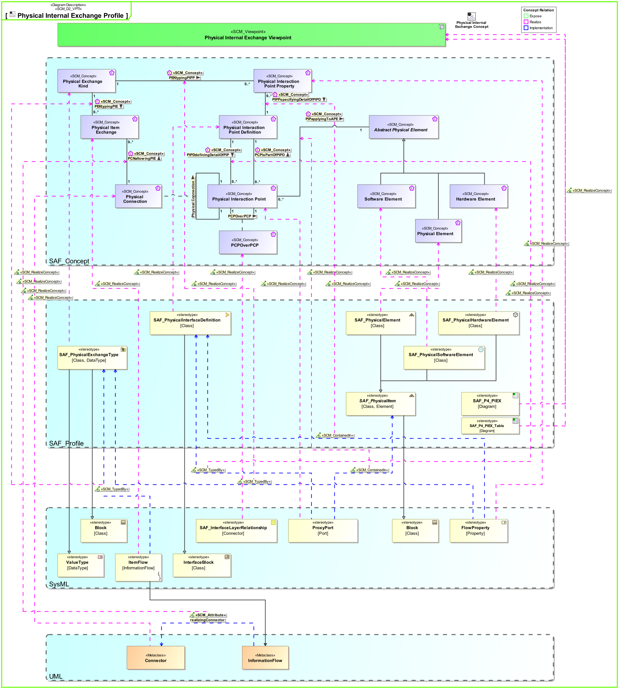

P4_PIEX Physical Internal Exchange Viewpoint
| Domain | Aspect | Maturity |
|---|---|---|
| Physical | Interaction & Collaboration |




The Physical Internal Exchange Viewpoint serves for the identification and definition of interfaces of elements of the physical system. also, the delegation of system element interfaces to the physical system boundary interfaces is covered. The Physical Internal Exchange Viewpoint
The Physical Internal Exchange Viewpoint supports the “Design Definition Process” activities of the INCOSE SYSTEMS ENGINEERING HANDBOOK 2023 [§2.3.5.5] and contributes to the artifacts “System Design Description” and “System Interface Definition”. It also supports the “Interface Management” method of the INCOSE SYSTEMS ENGINEERING HANDBOOK 2023 [§3.2.4].
One or more IBDs featuring the SOI boundary, the parts representing physical elements of the SOI. At the SOI boundary, the interfaces of the SOI represented as proxy ports. At the parts, proxy ports representing the SOI parts interfaces. Binding Connectors for each identified SOI interface delegated to physical SOI elements interfaces. connectors representing connections between interfaces of SOI parts. Item flows are defined for each planned exchange on the identified interfaces. Note: Please use more than one IBD focused on different areas of interest to keep the view comprehensive. Note: Ports may be nested to organize interfaces, but it is recommended to use only only one level.
A Table representing the content or part of the ibd content.
The following Stereotypes / Model Elements are used in the Viewpoint:
The Diagram shows the concepts exposed by the viewpoint, and related concepts if necessary.

| Concept | Documentation |
|---|---|
| PCNallowingPIE | Specifies the fact that a Physical Item Exchange is allowed on the Physical Connection. |
| PCPisPartOfPIPD | specifies that a physical interaction point can be a part of a physical interaction point definition. This fosters reuse and allows structuring of definitions. |
| PCPOverPCP | Specifies the fact that a physical interaction point communicates / transfers / flows / over an other physical interaction point. Used to define layered physical interfaces, and show layer relationships between interfaces. |
| PEKtypingPIE | Specifies the fact that a Physical Exchange Kind defines the type of a Physical Item Exchange. |
| PEKtypingPIPP | Specifies the fact that a Physical Exchange Kind defines the type of a Physical Interaction Point Property. |
| Physical Connection | Specifies the connection of two physical interaction points. Note: Connections between physical components indicate that item flows are passed from one output of a source component to one or more inputs of target components. |
| Physical Exchange Kind | Specification for any kind of physical item (energy, material, information, etc.) to be exchanged on Physical Level. This is the realization of the specification made by System Domain Kinds. |
| Physical Interaction Point Property | Specifies a detail of an interaction point on Physical Level. |
| Physical Interaction Point | Specifies the existence of an interaction point on Physical Level. |
| Physical Item Exchange | Specifies the exchange that is to take place on a Physical Connection. |
| PIPapplyingToAPE | Specifies the fact that a Physical Interaction Point applies to an Abstract Physical Element. |
| PIPDdefiningDetailOfPIP | Specifies the fact that a Physical Interaction Point Definition defines the exchange capabilities of a Physical Interaction Point. |
| Hardware Element | Pure Hardware Elements. Similarity with the V-Model "hardware unit". |
| Physical Element | A composition of Hardware and Software Elements. Similarity with the V-Model segments and system. See [VXT]. |
| Software Element | Pure Software Elements. Similarity with the V-Model "software unit". |
The Diagram shows the implementation of exposed concepts.
